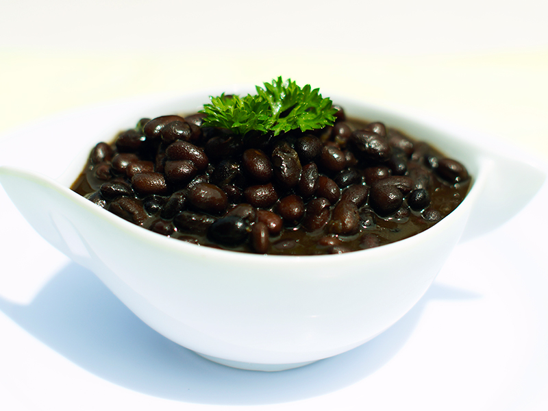

Home
Receta para unas deliciosas Habichuelas Negras Guisadas

Las habichuelas negras, o frijoles negros, aunque no son tan populares como otros tipos de habichuelas en nuestra mesa, es uno de mis favoritos por su atractiva presentación y sus ricos y fuertes sabores. No te lo pierdas, ¡te prometo que merecerá la pena hacerlo!
Ingredientes
- 2 Latas de Habichuelas Negras
- 1 Cebolla pequeña
- 2 Dientes de ajo
- Sal al gusto
- 2 Tazas de Agua
- 1/2 ají cubanela
- 1/2 atado de cilantro
- 1 cda de aceite vegetal
Preparacion
- Picar los vegetales en cuadritos pequeños y reservar el atado de cilantro.
- Sofreír los vegetales, luego agregar las habichuelas negras.
- Agregar la sal a su gusto y el atado de cilantro.
- Dejar hervir por 15 minutos a fuego medio lento, hasta que las habichuelas estén cremosas.
- Sirva las habichuelas.